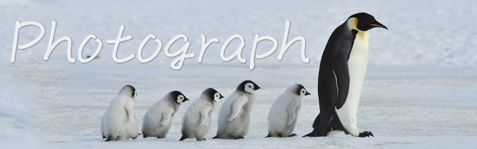
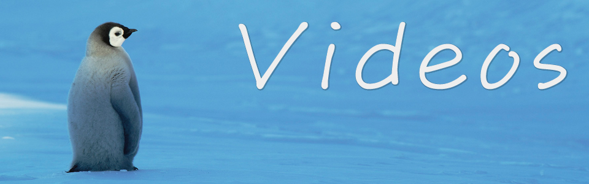

Portfolio
これまでに集めた画像や映像作品を掲載しています。

Penguinsでは｢ペンギン-Penguin｣｢可愛い-Cute｣｢愛くるしい-Lovely｣の3つの要素で主に｢コウテイペンギンの姿｣を集めてします。
南極という極寒の極地であっても確かに、そして逞しく生きるコウテイペンギンの姿がそこにあり、それでいて可愛さを兼ね備えた彼ら彼女らの姿に興味を持っていただければ幸いです。
他にもキングペンギンやアデリーペンギンなども掲載しています。
詳しくはこちら>>

Penguinsではペンギンの愛くるしい姿の映像も集めています。
ほとんどがYoutubeで集めた映像となりますが、愛くるしく応援したくなるようなペンギンたちをぜひご覧になってみてください。
詳しくはこちら>>